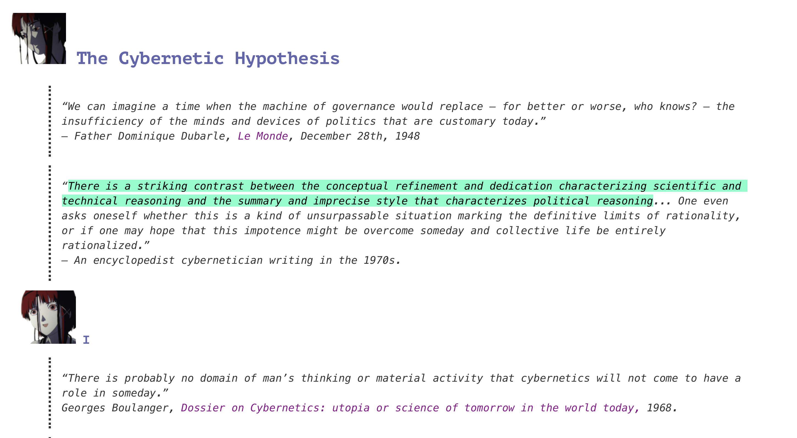
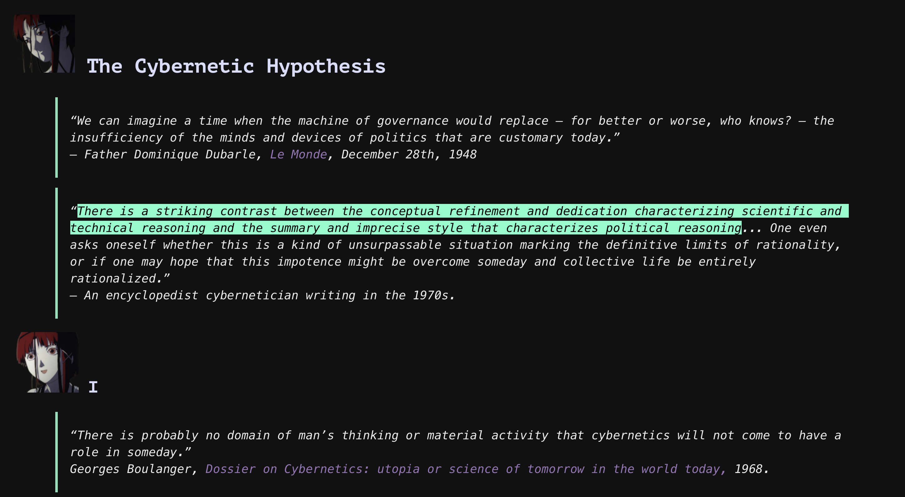

cyberia-typora-theme
Cyberia is a high contrast typora theme modified from the official typora theme monospace.
It contains a light theme Cyberia and a dark theme Cyberia Dark.
It’s inspired by “Serial Experiments Lain”.
The png resources come from a fan-site Wired Sound For Wired People bulit by ｆａｕｕｘ.


Install
Download, and move files under theme folder into Typora’s Theme Folder.
Or download the latest release, and extract contents into “Typora’s Theme Folder”.